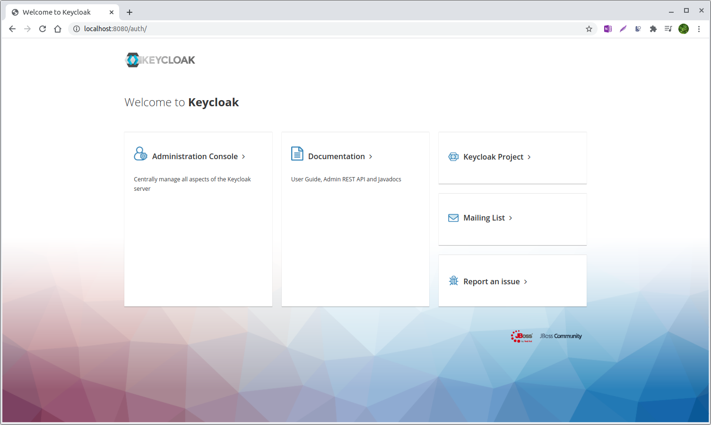
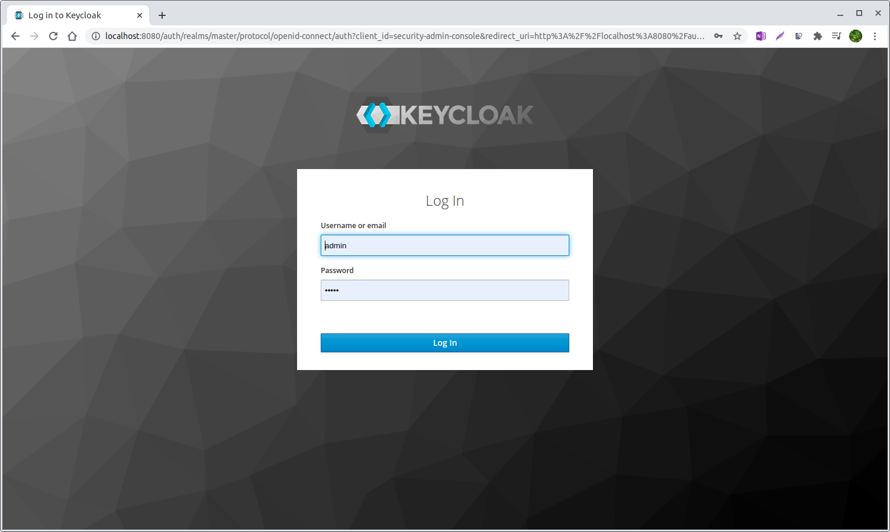
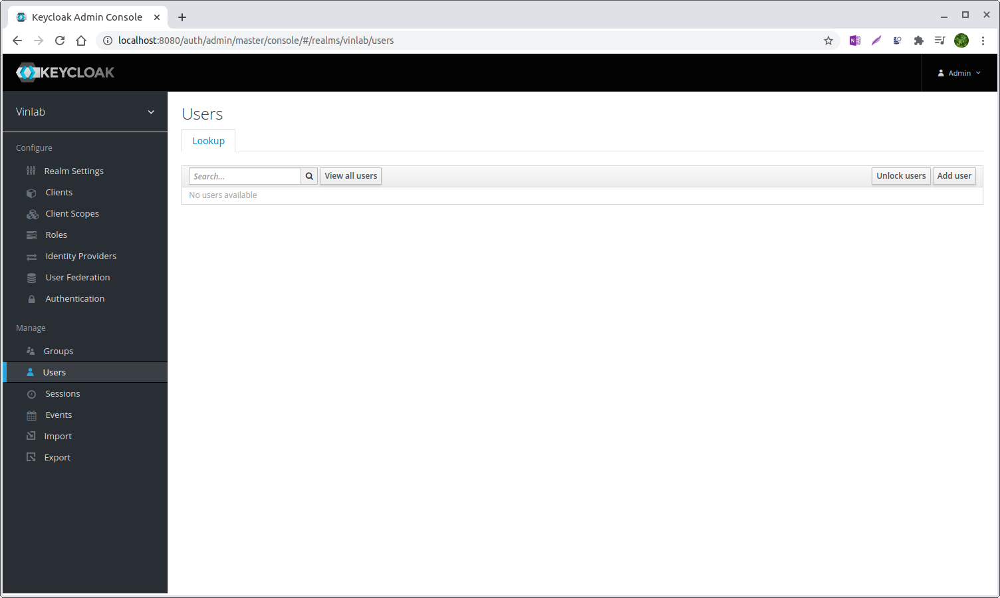
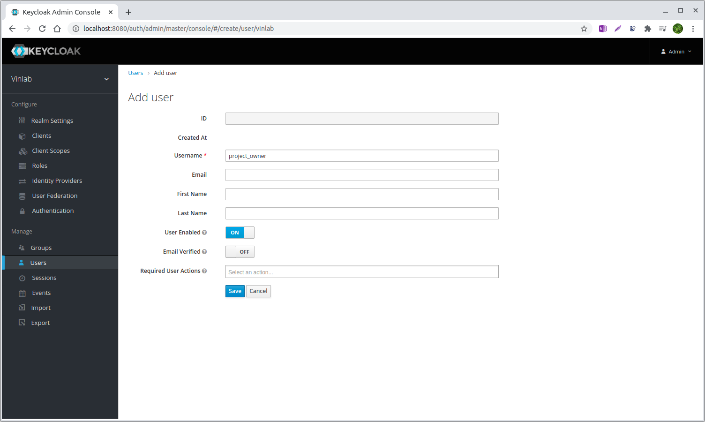

User management
Intro to KeyCloack
Normally, the default location for Keycloak is https://your_web_address/auth.

Click Administration Console, to go to the Master realm login creen.

In the Master realm login screen, user admin username and password. We provide default account is admin / admin
Create new user
To create a new user, go in to the Users section by clicking the Users in the left menu.

Then click Add user button

After creating a new username, turn to the Credentials tab, set your password.

User role mappings
There are 5 pre-defined roles in VinDr Lab with their following permissions
| RESOURCES | PO | ANNOTATOR | REVIEWER | PO_PARTNER | GUEST |
|---|---|---|---|---|---|
| accounts | R | R | R | R | R |
| annotations | R | CRUD | CRUD | R | R |
| labels | CRUD | R | R | CRUD | R |
| label_groups | CRUD | CRU | |||
| projects | CRU | R | R | R | R |
| tasks | CRUD | RU | RU | CRUD | R |
| objects | CR | R | R | CR | R |
| stats | R | R | R | R | R |
| sessions | CR | CR | CR | CR | CR |
| studies | CRUD | R | R | RUD | R |
| label_exports | CR | R |
To change the role of an user, go to Role Mappings tab, the assign desired role to the account